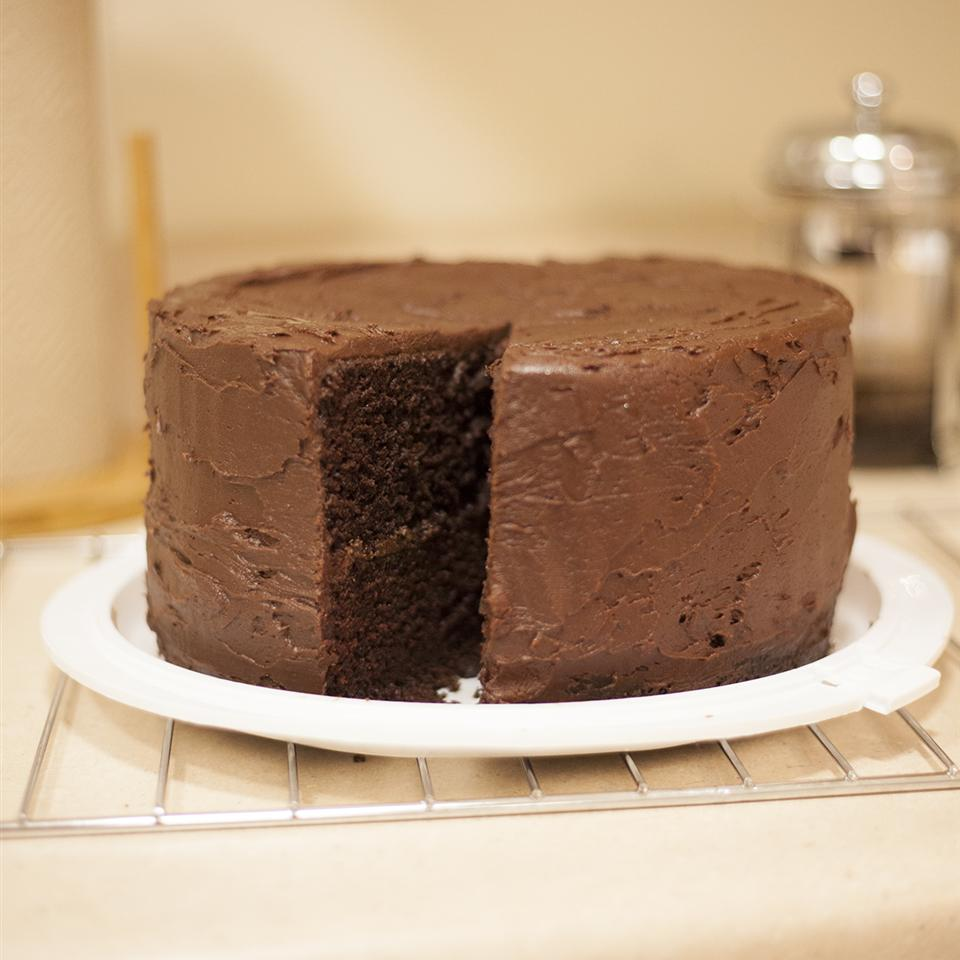

Chocolate Cake

This is a recipe of Dark Chocolate Cake it will put you in chocolate heaven!
The words “perfect” and “chocolate cake” basically have the same meaning, right? With our homemade dark chocolate cake this seems to be true. Baking from scratch is easier than you think when you use good quality cocoa with a few other simple ingredients. Bake this delicious dessert when you’re hosting the next family get-together, celebrating a birthday or wanting a bite of delicious chocolate cake after dinner. This dark chocolate cake was made for sharing, so get out your best plates,have a pitcher of milk ready and divvy out this chocolatey cake with your favorite people.
Ingredients:
- 2 cups all-purpose flour
- 2 cups white sugar
- ¾ cup unsweetened cocoa
- 2 teaspoons baking soda
- 1 teaspoon baking powder
- ½ teaspoon salt
- 2 eggs
- 1 cup cold brewed coffee
- 1 cup milk
- ½ cup vegetable oil
- 2 teaspoons vinegar
Steps:
- Preheat oven to 350 degrees F (175 degrees C). Grease and flour a 9x13-inch pan.
- In a large bowl, combine the flour, sugar, cocoa, baking soda, baking powder and salt. Make a well in the center and pour in the eggs, coffee, milk, oil and vinegar. Mix until smooth; the batter will be thin. Pour the batter into the prepared pan.
- Bake in the preheated oven for 35 to 40 minutes, or until a toothpick inserted into the center of the cake comes out clean. Allow to cool.